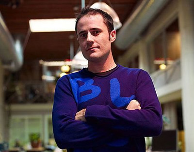

Twitter联合创始人：博客正在“变异”
2009.03.04 来自：腾讯科技
腾讯科技讯 北京时间3月3日消息，据国外媒体报道，Twitter联合创始人兼首席执行官埃文-威廉姆斯（Evan Williams）上周接受了美国脱口秀主持人查理-罗斯（Charlie Rose）的访谈。在访谈中，威廉姆斯就Twitter的定位、起源、现状以及赢利等诸多问题进行了回答了罗斯的提问。

http://info-database.csdn.net/Upload/2009-03-04/4.jpg
Twitter联合创始人兼首席执行官埃文-威廉姆斯
以下是本次访谈的要点摘要：
1、威廉姆斯指出，Twitter是一种异步关系（asynchronous relationship）。他说：“Twitter非常像社交网站，但它在构建人及关系的结构时，却有着根本的不同。”威廉姆斯认为，Facebook是社交网站的“典型例子”。他认为，Facebook可以用来维持现实中的人际关系。两个在现实生活中彼此相识的人可以通过Facebook交流，而在Twitter上，无论你是否认识此人，都可以关注其在Twitter上的消息。因此，Twitter更为开放。
2、威廉姆斯表示，Twitter更加“迅速”但也更具“约束性”。比如，你只能发送140字以内的信息，而且无法利用Twitter发送图片。这也暗示Twitter短期内不会增加这一功能。不过Twitter联合创始人、前首席执行官杰克-多尔西(Jack Dorsey)此前曾表示，不久后将推出这些功能。
3、威廉姆斯说，现在已经有约2000个不同的程序可以帮助用户发送Twitter信息。这都是由第三方开发的。用户可以通过第三方程序来发送图片，而且这些程序也遍及几乎所有平台，包括iPhone、黑莓、Windows、Mac等。威廉姆斯认为，个中缘由在于Twitter的界面简单。
4、Twitter吸引了包括美国总统奥巴马以及众多国会议员在内的用户，这表明Twitter对所有用户开放。威廉姆斯认为，Twitter的价值在于即时性，用户可以通过短信来发送Twitter信息。这也是Twitter信息为何被限制在140字之内的原因。短信的字数限制为160字，剩余的20字是为用户名预留的。
5、威廉姆斯坦诚，虽然他既是Twitter的联合创始人又参与创建了Blogger（后者最终被谷歌收购），但这两个创意都不是他发明的，其中Twitter是由前首席执行官杰克-多尔西发明的。而威廉姆斯本人只是出于“企业家的直觉”在第一时间亲自试用了这两个服务后“从中看到了机会”。威廉姆斯说：“我个人喜欢新颖的东西。我在Blogger和Twitter身上看到了类似的东西。我觉得这非常有趣。虽然我不知道它们将会如何发展，但我都是基于经验做出判断。”
6、在谈到博客的现状时，威廉姆斯称，博客现在正在发生“变异”。他说：“人们原先只在Blogger这样纯粹的博客网站上写博客，但是现在却都通过Facebook、MySpace和Twitter来写博客。从总体上看，博客的规模的确比以往更大，但博客的确处在变革中。”
7、在谈及互联网的发展和作用时，威廉姆斯指出：“互联网能够更有效的满足人类的基本欲望，而与他人进行社会化的联系就是其中一个很大的欲望。这也正式社交网站的力量所在。”
8、当罗斯让威廉姆斯对未来五年的技术进行展望时，威廉姆斯表示：“这很难说，我很难预料技术上的变化，我认为更大的变化将在于文化上。人们将会更加适应某些趋势。我记得当年我们创建Blogger时，很多人都觉得这非常奇怪，人们说：‘他们怎么敢在网上写东西？’但后来人们逐渐接受了这种方式，比如Facebook和MySpace就已经为普通大众所接受。”威廉姆斯预计，五年后，像Twitter这样的社交网络对于人们而言将是稀松平常的东西。
9、在被问及Twitter是否是一种全球化的趋势时，威廉姆斯表示：“只有半数Twitter用户来自美国。”随后，主持人罗斯又追问道，还有哪些比较大的市场。威廉姆斯说：“日本对于我们而言是非常大的市场。”事实上，Twitter还专门推出了日文版的网站。威廉姆斯还表示：“英国市场近期的增长也非常迅猛。并成为仅次于日本的Twitter第二大海外市场。此外，德国、加拿大和巴西的增长也相当不错。”
10、威廉姆斯还对去年的宕机问题进行了回应。他说：“其实我们刚开始的一年半时间是非常艰苦的。那时网站非常慢，而且经常宕机，这几乎让我们绝望。”
11、当罗斯问及近期有关Facebook曾有意收购Twitter的传言时，威廉姆斯表示：“没错，我们的确与Facebook谈过。”不过对于估值问题，威廉姆斯拒绝作答。但他表示，之所以放弃出售是因为“我从不认为这是Twitter最好的归宿。我觉得现在还为时尚早”。他认为：“其中存在巨大的风险。虽然我们还没赚钱，也可能做错事，但是我们有着巨大的潜力，如果现在就停下来，就算拿到了一大笔资金，也会让我们感到非常失落。”
12、威廉姆斯说：“很大程度上，我们都是用户导向的。我们每天都能从用户的使用方式中得到惊喜，其实很多具有革新性的产品都是由用户自己创造的。当然，也包括第三方开发者。我们希望平台能够更加开放且更具灵活性，从而为用户提供更多的价值。”
13、在被问及是否会被当做一种新闻报道的方式时，威廉姆斯表示赞同，他说，Twitter上报道的许多都是实时信息，这也是Twitter吸引人的地方。他说：“集中集体智慧将是一种非常有趣的方式。”他还表示，人们可以利用Twitter的搜索功能来搜索别人正在做什么、说什么，从而获得一些即时报道，我们有潜力使之更具智能性。
14、威廉姆斯还表示，通过“算法和群体编辑”，Twitter的搜索功能将更加有用，比如，“我们可以挖掘有趣的事情，同时了解人们对特定事件的反应。”威廉姆斯说，现在的Twitter可以帮助人们了解正在发生的事情，不过你需要主动去搜索。而以后，Twitter则可以根据用户以前的兴趣自动推送当前的信息，即使用户对此根本不知情也没有关系，因为系统会根据之前的兴趣自动进行判断。
15、威廉姆斯表示，为用户推荐关注对象是“最困难的一部分”。
16、在谈到盈利问题时，威廉姆斯说道：“我们还不十分肯定，但是我们已经有了一些主意。”他随后笑着说：“就像Twitter本身一样，假以时日，会有的。”威廉姆斯说：“在互联网泡沫破裂前，一个网站只要有了足够的流量，那么它绝对不会仅仅因为不赚钱而消失。但是这种情况已经一去不复返了。关键问题在于，我们创造的商业模式是革命性的还是仅能维持生存。”
17、威廉姆斯说：“Twitter上已经有了许多商业应用。”Twitter有可能会就新的或者更多的功能向商业用户收费，当然也可能开发独特的广告模式。他说：“如果我们做的足够聪明，那么不仅用户可以从中获益，企业同样可以利用Twitter赚钱。”
18、威廉姆斯承认，“想要利用社交网络赚钱并不容易，而利用人们搜寻信息的行为来赚钱就要容易得多，谷歌就是很好的例子。”但是他还指出，Twitter虽然更像是一个社交网站，但是它同时也具备信息的元素，因此Twitter其实是“位于社交网站和信息搜寻网站之间。因为用户不仅会利用Twitter与自己认识的人联系，也可以通过Twitter来获取信息。”（编译/长歌）